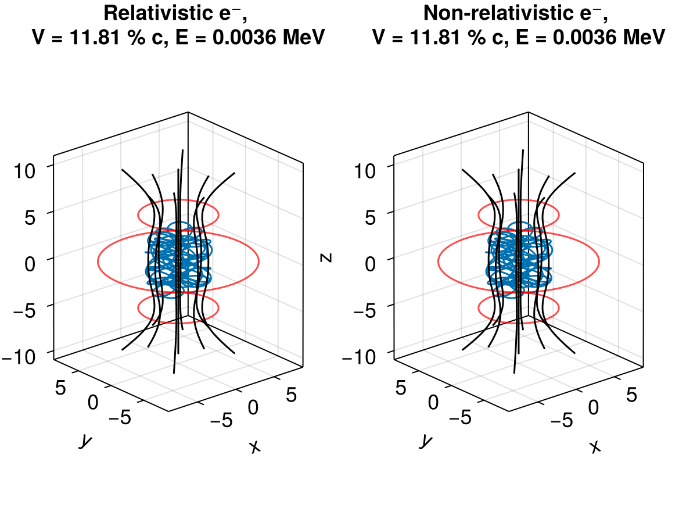

Electron in a magnetic bottle


This example shows how to trace non-relativistic and relativistic electrons in a stationary magnetic field that corresponds to a magnetic bottle. Reference wiki
using TestParticle
using TestParticle: getB_bottle
using OrdinaryDiffEq
using StaticArrays
using Printf
using CairoMakie
### Obtain field
# Magnetic bottle parameters in SI units
const I1 = 20. # current in the solenoid
const N1 = 45 # number of windings
const I2 = 20. # current in the central solenoid
const N2 = 45 # number of windings
const distance = 10. # distance between solenoids
const a = 4.0 # radius of each coil
const b = 8.0 # radius of central coil
function getB(xu)
SVector{3}(getB_bottle(xu[1], xu[2], xu[3], distance, a, b, I1*N1, I2*N2))
end
function getE(xu)
SA[0.0, 0.0, 0.0]
end
### Initialize particles
m = TestParticle.mₑ
q = TestParticle.qₑ
c = TestParticle.c
# initial velocity, [m/s]
v₀ = [2.75, 2.5, 1.3] .* 0.03c # confined
# initial position, [m]
r₀ = [0.8, 0.8, 0.0]
stateinit = [r₀..., v₀...]
# Theoretically we can take advantage of the fact that magnetic field does not
# accelerate particles, so that γ remains constant. However, we are not doing
# that here since it is not generally true in the EM field.
param = prepare(getE, getB; species=Electron)
tspan = (0.0, 1e-5)
prob_rel = ODEProblem(trace_relativistic!, stateinit, tspan, param)
prob_non = ODEProblem(trace!, stateinit, tspan, param)
vratio = √(v₀[1]^2+v₀[2]^2+v₀[3]^2)/c
E = (1 / √(1 - vratio^2) - 1)*m*c^2/abs(q)/1e6
v_str = @sprintf "V = %4.2f %s" vratio*100 "% c"
e_str = @sprintf "E = %6.4f MeV" E
println(v_str)
println(e_str)
# Default Tsit5() and many solvers does not work in this case!
sol_rel = solve(prob_rel, AB4(); dt=3e-9)
sol_non = solve(prob_non, AB4(); dt=3e-9)
### Visualization
f = Figure(fontsize=18)
ax1 = Axis3(f[1, 1];
aspect = :data,
title = "Relativistic e⁻, \n"*v_str*", "*e_str
)
ax2 = Axis3(f[1, 2];
aspect = :data,
title = "Non-relativistic e⁻, \n"*v_str*", "*e_str
)
lines!(ax1, sol_rel, idxs=(1, 2, 3))
lines!(ax2, sol_non, idxs=(1, 2, 3))
# Plot coils
θ = range(0, 2π, length=100)
x = a.*cos.(θ)
y = a.*sin.(θ)
z = fill(distance/2, size(x))
for ax in (f[1,1], f[1,2])
lines!(ax, x, y, z, color=(:red, 0.7))
end
z = fill(-distance/2, size(x))
for ax in (f[1,1], f[1,2])
lines!(ax, x, y, z, color=(:red, 0.7))
end
x = b.*cos.(θ)
y = b.*sin.(θ)
z = fill(0.0, size(x))
for ax in (f[1,1], f[1,2])
lines!(ax, x, y, z, color=(:red, 0.7))
end
using FieldTracer
xrange = range(-4, 4, length=20)
yrange = range(-4, 4, length=20)
zrange = range(-10, 10, length=20)
Bx, By, Bz = let x=xrange, y=yrange, z=zrange
Bx = zeros(length(x), length(y), length(z))
By = zeros(length(x), length(y), length(z))
Bz = zeros(length(x), length(y), length(z))
for k in eachindex(z), j in eachindex(y), i in eachindex(x)
Bx[i,j,k], By[i,j,k], Bz[i,j,k] = getB([x[i], y[j], z[k]])
end
Bx, By, Bz
end
for i in 0:8
if i == 0
xs, ys, zs = 0.0, 0.0, 0.0
else
xs, ys, zs = 3*cos(2π*(i-1)/8), 3*sin(2π*(i-1)/8), 0.0
end
x1, y1, z1 = FieldTracer.trace(Bx, By, Bz, xs, ys, zs, xrange, yrange, zrange;
ds=0.1, maxstep=1000)
for ax in (f[1,1], f[1,2])
lines!(ax, x1, y1, z1, color=:black)
end
end

This page was generated using DemoCards.jl and Literate.jl.